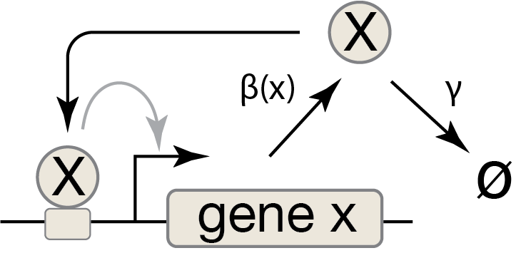
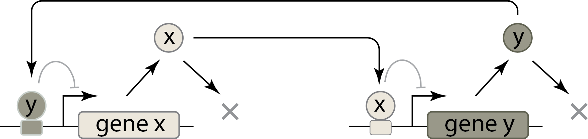

One of the most amazing aspects of living cells is their ability to differentiate into different—sometimes radically different—types. In animals, neurons look and behave quite differently than skin or blood cells even though they all share the same genome. Single cell analysis and large scale cell atlas projects (see (Regev et al. 2017)) are only beginning to reveal the full diversity of cell types. And, as we zoom in to examine individual cells of any one nominal type, we often find many sub-types, or state, with different morphologies, functions, spatial locations, and gene expression profiles. Something similar occurs in bacteria, where a given strain can often exist in different states that differ in function and gene expression.
It is not straightforward to define what we mean by a cell “type” (See (Clevers et al. 2017).) Nevertheless, one of their key properties is a kind of “stickiness” or memory. If you take a neural progenitor out of a developing embryo, and culture it in a dish, it largely retains its neural progenitor identity, including gene expression and the repertoire of cell types that it can differentiate into. Cell type identity is mitotically stable, retained even as the cell undergoes multiple rounds of cell division. Having said that, cell type identity is not absolutely fixed. Combinations of signaling molecules or drugs or forced expression of transcription factors can induce changes in cell identity. This is put to good use in the field of regenerative medicine, which seeks to generate cells of desired types for therapeutic purposes. Nevertheless, in general, a cell type is a relatively stable, mitotically heritable property of a cell.
Just as important as the stability of a cellular state is the nature of transitions between those states. How does a cell switch from one state to another in response to an instructional cue to differentiate? Does it gradually meander from one state to the next, able at backtrack at any point? Or does it transition more suddenly and even irreversibly? This question was studied in a series of beautiful papers by James Ferrell and colleagues on the maturation of Xenopus frog oocytes (Ferrell 1999). In response to the hormone progesterone, these oocytes can switch from an “immature” state, stable for weeks, to a “mature” state, stable for 1-2 days. When they exposed immature oocytes to increasing concentrations of progesterone, they observed that the fraction of oocytes that matured correspondingly increased. But maturation was an all-or-none transition at the level of each individual oocyte. Lower progesterone concentration had a lower likelihood of triggering a transition in any individual cell. But once triggered, maturation occurred in the same stereotyped, almost “digital,” manner.
Programmed cell death is another process that involves all-or-none transitions. In multicellular organisms, there are several different processes, including apoptosis, pyroptosis, and ferroptosis, that cause cells to die in specific, organized ways. This is important for removing cells in diseased or senescent states, and for sculpting developing tissues. Initiation of cell death is not only a stochastic, all-or-none process, it is also one of the more irreversible processes in biology. Work from Sabrina Spencer, Peter Sorger, and colleagues lab showed ((Spencer et al. 2009)) how a ligand that induces cell death does so in a stochastic, all-or-none, and irreversible fashion.
At the level of genes, eukaryotic gene expression can also be “sticky.” Chemical modifications to histones, the proteins that organize DNA within the nucleus, modulate the expression level of genes they interact with. The cell has enzymes that not only “write” these modifications but also propagate them, so that once established they are constantly replaced. The result is that a gene can be repressed—or silenced—by a signal, and stay silent, even after that signal is removed, for many cell generations.
In prokaryotes, the bacteriophage lambda, which infects E. coli, can exist in either a dormant “lysogenic” state or a “lytic” state in which it replicates and ultimately kills the cell. This system is beautifully described in Mark Ptashne’s classic book (Ptashne 2004). We will discuss this example more below.
As you can see, a huge diversity of biological systems seem to involve sticky switches and all-or-none, and sometimes irreversible, transitions between different states. While the components and interactions used by these systems are diverse, similar principles apply to all.
3.2 Positive autoregulation enables bistability
What types of circuits can allow a cell to exist in two or more distinct states, each one stable on its own? In 1949, Max Delbrück noted that two metabolic pathways, if they cross-inhibited each other, could under some circumstances become bistable, such that either one or the other, but not both, would be active. He then speculated ((Huang 2021)), “Models of this kind can… account for large numbers of alternative steady states… similar to the phenomena of differentiation.”
The key circuit property we will study is bistability, defined as the ability of a circuit to exist in two distinct stable states. We will see that bistability can be achieved with circuits as simple as a single gene, as long as they possess two key properties: positive feedback and ultrasensitivity.
In Chapter 1, we analyzed the steady-state behavior of a gene regulated by an activator, which we assumed was present at some fixed concentration within the cell. However, just as repressors can repress their own expression (negative autoregulation), as we saw in the Chapter 2, activators can activate their own expression. This phenomenon, positive autoregulation, occurs with both bacterial and eukaryotic transcription factors, especially those that establish and maintain cell states. Here, we will show how positive autoregulation can, under some conditions, generate bistability, such that states of high and low expression can both be stable.

Figure 3.1: A circuit with positive autoregulation.
We can represent a positive autoregulatory circuit with the following ODE, where the production term for the activator, X, is an activating Hill function of its own concentration, \(x\):
We can get some intuition about this system’s behavior without diving straight into solving the ODE or even finding its steady states. First, we notice that \(\mathrm{d}x/\mathrm{d}t\) vanishes for \(x = 0\), regardless of the parameter values, so \(x = 0\) is always a steady state. If the activator is absent, it stays absent.
To go further, we will turn to graphical methods and plot the values of the production term (the activating Hill function) and the degradation term (\(\gamma x\)) for various values of \(x\).
The value of \(\mathrm{d}x/\mathrm{d}t\) at a particular value of \(x\) is determined by the difference between the production rate and the degradation rate for that \(x\) value. Whenever the production rate is equal to the degradation rate, the time derivative vanishes (\(\mathrm{d}x/\mathrm{d}t = 0\)), and we have a fixed point.
We can see in the plot above that, for the parameters that were chosen here, there are three fixed points corresponding to the three intersections between the production rate function and the removal rate function. This means that there are three possible values of \(x\) that give steady states. How do we know which fixed point the system will move toward?
We can answer this question by determining the stability of each fixed point. Notice that the above graph, in addition to telling us the location of the fixed points, also tells us the direction that the system will move at any given value of \(x\). If, at that value, the production rate is higher than the degradation rate, then \(\mathrm{d}x/\mathrm{d}t > 0\) so \(x\) will increase. Correspondingly, if the degradation rate is higher than the production rate at a particular value of \(x\), then \(\mathrm{d}x/\mathrm{d}t < 0\) and \(x\) will decrease. We have marked this information in the above plot with horizontal arrows indicating the direction that the system when \(x\) lies within different ranges.
Looking at these arrows, we see that the system moves towards some fixed points and away from others. When a system near a fixed point tends to move towards that fixed point, from any direction, then we call that fixed point stable. Otherwise, it is called an unstable fixed point. Unless this system’s initial condition places it exactly at the unstable fixed point, as the system evolves over time it will converge to one of the two stable fixed points. Which fixed point it converges to is determined by the initial value of \(x\); if the system starts below the unstable fixed point (to the left of the dashed line) then it will converge to the lower stable fixed point; if it starts above the unstable fixed point it will converge to the higher stable fixed point. In such a way, each stable fixed point has a basin of attraction, a set of values of \(x\) for which the system will converge toward the fixed point. In the above plot, the basin of attraction for the higher fixed point is all \(x\)-values to the right of the dashed line, and that for the lower fixed point is all \(x\)-values to the left of the dashed line (including, of course, only non-negative \(x\)).
Since this system has two stable fixed points, we can describe it as bistable. As long as noise or other perturbations are not too strong, the cell can happily remain at either a low or high value of x. Bistability is a special case of the more general phenomenon of multistability, which is one of the most important properties in biology, underlying the ability of a single genome to produce a vast array of distinct cell types in a multicellular organism. (We will discuss a larger multistable circuit later in the course.)
This simple analysis shows us that a single positive autoregulatory gene can generate bistability! However, positive feedback by itself is not enough. Bistabiity also requires an ultrasensitive response to \(x\). (In the context of the Hill function, ultrasensitivity can be defined as \(n>1\)). If we reduce the Hill coefficient to 1, keeping other parameters the same, you can see that we now have only a single stable fixed point (and one unstable fixed point at \(x=0\)).
Code
# Reduce n to 1n =1# Recompute production curveprod = beta * (x/k) ** n / (1+ (x/k) ** n)# Fixed pointsfp_rhs =lambda x: beta / gamma * (x/k) ** n / (1+ (x/k) ** n)fixed_points = [0, float(scipy.optimize.fixed_point(fp_rhs, 3))]# Build plotp = bokeh.plotting.figure( frame_height=275, frame_width=375, x_axis_label="x", y_axis_label="production or removal rate", title=f"β = {beta}, γ = {gamma} , k = {k}, n = {n}", x_range=[-1, 20],)# Plot production and removal ratesp.line(x, prod, line_width=2, color="#1f77b4")p.line(x, removal, line_width=2, color="orange")# Plot fixed pointsfor i, fp inenumerate(fixed_points): fill_color ="black"if i %2else"white" p.scatter( [fp], [gamma * fp], color="black", size=10, line_width=2, fill_color=fill_color, )bokeh_show(p)
In an end-of-chapter problem, you can prove that no matter how we change the other parameters in this model, the system will never be able to obtain bistability unless it has ultrasensitivity (\(n>1\)).
Nevertheless, ultrasensitivity does not guarantee bistability in this system. It also requires tuning of the system’s other parameters relative to one another. We can explore this relationship between the parameter values in the interactive plot below.
As \(\gamma\) increases, the upper two fixed points get closer and closer together, eventually disappearing as the system becomes monostable, always converging to the single value of \(x=0\), and therefore unable to activate itself. The range of parameter values that is near this disappearing point is important because a very small change in a parameter can lead to a very drastic change in the behavior of the system. Such a phenomenon is called a bifurcation. In this case, we can see that the system transitions between monostability and bistability, and within a critical region of parameter space near this bifurcation, even a miniscule change in the value of a parameter is enough to push the system over the edge into one regime or the other.
When we design a biological circuit, it is important to be aware of bifurcations. Slight deviations in a parameter value that would have only modest effects on system performance away from a bifurcation point can generate much more drastic changes if they cause the system to bifurcate from one regime to another.
But how can you know whether a given parametrization of the system is close to a bifurcation value or not? A simple way to find out for the positive autoregulation circuit is to determine the number of fixed points in the system and identify the boundary in parameter space between regimes that exhibit one fixed point and those that have three fixed points.
3.3 Analytically determining the number of fixed points
In this section, we will illustrate how we can mathematically manipulate the ODE for the positive autoregulation system to analytically determine the number of fixed points for a given parametrization. While the approach here is not universal—it cannot be applied directly to any system to analyze its behavior—it illustrates a useful style of reasoning that will help develop intuition for other circuits we encounter.
3.3.1 Using nondimensionalization to simplify the system
Recall our differential equation for the dynamics of an autoactivator:
Here we can identify two variables, \(x\) and \(t\), and four parameters, \(\beta\), \(\gamma\), \(k\), and \(n\). Understanding how the circuit behaves as four parameters are varied is challenging. However, the dynamics do not depend on all four parameters independently. In a simpler case, we saw that for unregulated expression, the steady state protein concentration is given by the ratio \(\beta/\gamma\). It is the ratio that matters, not the individual values of \(\beta\) and \(\gamma\).
The procedure of nondimensionalization allows us to reduce the number of independent parameters and still be able to explore the full dynamics. The key idea is that each variable or parameter has some dimension. For example, \(x\) has dimension of concentration, or number of particles per cubic length, written as
\[
\begin{align}
x = \left[\frac{N}{L^3}\right].
\end{align}
\tag{3.3}\]
Similarly, the parameter \(\gamma\) has dimension of inverse time, or \(\gamma = [T^{-1}]\). It is clear that each term in the dynamical equation has dimension of \(N/L^3 T\). In general, every term in an equation must have the same dimension; trying to add, for example, a meter to a kilogram is nonsensical.
The nondimensionalization procedure involves rewriting the equations such that every term is dimensionless, which means that every term has dimension of unity. This is beneficial for several reasons.
It reduces the number of parameters you need to consider. Only dimensionless ratios/products of parameters are considered.
It allows comparison of the relative magnitudes of terms in an equation.
It provides intuition by identifying which ratios and products of parameters control the dynamics.
We detail procedures of nondimensionalization generally and applied to the autoactivation system and the synthetic toggle system at the end of this chapter in a technical appendix. The result is
The nondimensionalization procedure provides insight about the important ratios of parameters. Here, there are two dimensionless parameters: \(\beta\) and \(n\). \(n\) is a measure of the ultrasensitivity of the activation. The non-dimensionalized \(\beta\) is the ratio of the gene’s unregulated steady state, expressed in dimensional parameters, \(\beta/\gamma\), to the level of gene product necessary to activate itself, \(k\).
Another way to look at this result is to say that we have chosen meaningful units of time and concentration. We are effectively measuring time in units of the key timescale in the system—the protein lifetime \(\gamma^{-1}\)—and protein concentrations in terms of the only concentration scale in the problem, the amount required for half-maximal repression, \(k\).
Nondimensionalization is often the first step in analyzing a model for circuit behavior, We will apply it again and again throughout this book.
3.3.2 Analytical methods for exploring steady states
From our analysis above, we found that the system has the following properties.
The system always has a fixed point at \(x = 0\).
The system has either zero, one, or two fixed points with \(x > 0\).
If the system has zero fixed points with \(x > 0\), it is monostable at \(x = 0\).
If the system has two fixed points with \(x > 0\), the greater of the two is stable, as is the fixed point at zero, with the middle fixed point being unstable. This is the bistable regime.
If we can find the number of fixed points, we can determine if the system is monostable or bistable. Fortunately, now that we have expressed the system’s dynamics using only two parameters, it is easier to analyze.
Finding the fixed points amounts to finding the roots of the equation
where \(f(x)\) is the right hand side of the dimensionless ODE defined above.
Since we know that \(x=0\) is always a fixed point, for the remainder of our analysis, we will therefore assume that \(x>0\) as we try to determine if there are any nonzero fixed points. (We ignore fixed points where \(x < 0\), since a negative concentration is unphysical.)
With these assumptions, and some basic algebraic operations, we can rewrite the equation \(f(x) = 0\) as
were we have defined the function \(g(x)\) for convenience of reference. We are trying to find positive values of \(x\) for which \(g(x) = 0\). To find the roots, we need to consider different values of \(n\) separately.
The n > 1 regime
From looking at the form of the \(g(x)\) expression, as long as \(n > 1\), we can see that in the limit as \(x\) approaches \(0\), \(g(x)\) approaches a value of \(1\). Meanwhile, as \(x\) gets large, we see that the \(x^n\) term will dominate the expression and \(g(x)\) will approach infinity. Further, for \(n > 1\), we can show that a unique minimum of \(g(x)\) exists. We do this by recalling the conditions for a minimum: The the first derivative of \(g(x)\) is zero and the second derivative of \(g(x)\) is positive.
So, the function \(g(x)\) decreases from unity at \(x = 0\), hits a minimum, and then grows to infinity with increasing \(x\).
If \(g(x_{\mathrm{min}}) > 0\), then we know that \(g(x)\) never dips low enough to satisfy \(g(x) = 0\), and \(x=0\) is our only fixed point. On the other hand, if \(g(x_{\mathrm{min}}) < 0\), then we know that there must be at least two nonzero fixed points, since \(g(x)\) had to cross the \(x\)-axis to get from \(1\) to \(g(x_{\mathrm{min}})\) and must cross it again to get from \(g(x_{\mathrm{min}})\) to \(+\infty\).
To make this more clear, in the plot below, we visualize the known limiting behavior at the edges using dark lines and potential behaviors of \(g(x)\) in the interior using faint lines.
Therefore, the condition for \(g(x)\) to be less than zero for some values of \(x\) is \(g(x_\mathrm{min}) < 0\), which, using the above expression and rearranging, is equivalent to
\[
\begin{align}
\beta > n (n-1)^{(1-n)/n}.
\end{align}
\tag{3.10}\]
In the regime where the above inequality holds, there is a unique minimum of \(g(x)\) below zero, and therefore the system has two positive fixed points, in addition to the fixed point at \(x = 0\). When \(\beta < n (n-1)^{(1-n)/n}\), the unique minimum is above zero, so the \(g(x)\) curve never crosses the x-axis, and the fixed point at zero is the only fixed point. So, when \(\beta = n (n-1)^{(1-n)/n}\) the system switches from having one to having three fixed points. This line in parameter space represents a bifurcation, where the qualitative properties of the system change upon crossing it.
The n ≤ 1 regime:
We have not yet considered the \(n \le 1\) regime. In an end-of-chapter problem, you can prove that only one stable fixed point exists in this regime, regardless of the values of \(\beta\). We will take that as given going forward.
3.3.3 A bifurcation diagram
We have now analyzed the system fully and shown that the system is monostable for \(n\leq 1\). For \(n>1\), the system is bistable when \(\beta > n(n-1)^{(1-n)/n}\), monostable when \(\beta < n(n-1)^{(1-n)/n}\), and undergoes a bifurcation between these two regimes when \(\beta = n(n-1)^{(1-n)/n}\).
Thanks to the fact that we nondimensionalized our system, its bifurcation behavior can be fully explained using only two dimensionless parameters. This allows us to visualize it with the nature of the steady states of the system with a bifurcation diagram, shown below.
This analysis can help us engineer a system to be bistable. By using a strong (\(\beta\) large) and ultrasensitive (\(n\) larger than 1, and preferably larger than 2) regulatory system, we can ensure bistability. Further, if we measure the values of our parameters and find that we are near the bifurcation boundary, then we know that small variations in the parameter values can cause a large, qualitative change in the system’s behavior. In particular, we can see from the plot above that the regime where \(1 < \beta < 2\) and \(1 < n < 2\) is a particularly bifurcation-prone regime that we would definitely want to avoid designing our system into if its desired performance is to be reliably bistable.
Because biological components fluctuate, and parameter values are rarely known with precision, for reliability one should ideally design a bistable system to lie far away from the bifurcation boundary.
3.4 Bistability enables memory through hysteresis
Bistability’s most direct function is supporting multiple phenotypically-distinct cell states. But a second function is its ability to enable irreversible responses to transient input signals, a feature known as hysteresis.
Consider the postive autoregulation circuit in its bistable regime, with \(x\) at the upper stable fixed point. Now, suppose some transient perturbation occurs. Perhaps the value of \(\gamma\) is suddenly increased because the cell has begun dividing at a much faster rate. If this perturbation is large enough to cross the bifurcation boundary, then the system becomes monostable, and \(x\) will be driven to the only stable fixed point, at a value closer to what was previously the lower fixed point in the bistable regime. Once the perturbation ends, \(\gamma\) returns to its original value, and the system regains bistability. But, if the perturbed value of \(x\) lies within the basin of attraction of the lower bistable state, then the system will remain in the lower state. In this scenario, a transient perturbation will have led to a permanent state switch. In this sense the system has a “memory” of the transient event.
This scenario is illustrated in the series of plots below.
This is the principle of hysteresis—a dependence of the system state on its past history. We will now examine how a circuit can be designed to explicitly enable the recording of an external stimulus via hysteresis in a bistable system.
3.5 The toggle switch: a two-gene positive feedback system
In natural circuits, positive feedback loops often include multiple regulators rather than just a single autoregulatory transcription factor. For example, the “genetic switch” in the bacterial virus, or bacteriophage, lambda involves reciprocal repression of the cro repressor by the \(\lambda\)cI repressor, and vice versa (see Mark Ptashne’s classic book, A genetic switch). This arrangement allows lambda to remain in its dormant “lysogenic” state, where λcI is expressed and represses cro, or switch to a “lytic” state in which cro is expressed, repressing cI. In the lytic phase, the phage replicates itself and lyses the host cell, enabling lambda to go on to infect other cells. Interestingly, cI is not only a repressor, but also an activator, and it activates its own expression in an ultrasensitive manner due to cooperative binding interactions. Thus, the natural circuit combines a 1-gene positive autoregulation circuit with a 2-gene mutual repression circuit.
In 2000, Gardner, Cantor, and Collins designed, constructed, and analyzed a synthetic version of the two-gene mutual repression “toggle switch,” and showed that it could exhibit bistability. Here is a simplified diagram of the general design:

Figure 3.2: Architecture of the synthetic toggle switch designed by Gardner, Cantor, and Collins.
Importantly, they chose to build their circuit using two repressors whose ability to repress their target genes could be inactivated by corresponding small molecule inducers (or in some cases by a temperature shift that inactivated a temperature-sensitive repressor mutant). They could thereby inhibit each of the two repressors, pushing the circuit into a monostable regime, with the other repressor highly expressed. When these input signals were subsequently removed, the circuit returned to a bistable regime, but, due to hysteresis, its expression states remained largely unchanged. In this way, they showed that the toggle circuit could record a minimal 1 bit memory of the last signal that it experienced.
The figure below, featuring data digitized from the paper, shows the toggling behavior. IPTG is an inducer that inhibits repression by LacI, one of the two repressors they used in the toggle. In a control experiment without the toggle architecture, expression of the gene under control of the promoter repressed by LacI grows steadily with increasing IPTG concentration. Conversely, for the toggle architecture, there is a sharp jump in expression at an intermediate IPTG concentration, marking the “switch” of the toggle.
To analyze this two-repressor feedback loop, we can write down differential equations for the concentrations of the \(x\) and \(y\) proteins, assuming for simplicity that they share the same Hill coefficient, \(n\). For now we will neglect the dynamics associated with using the inducer signals to inactivate a particular repressor.
As before, this corresponds to measuring each repressor concentration in units of the concentration required to half-maximally repress its target, and measuring time in units of one of the repressor lifetimes. With this, we can now clearly see that the dynamics of the system depends only on (a) the strengths of the two promoters, (b) the sensitivity of the response (Hill coefficient), and (c) the relative lifetimes of the two proteins (expressed by \(\gamma = \gamma_y/\gamma_x\)).
A useful next step to analyze a two-dimensional system like this is to compute the nullclines, which are defined by setting each of the time derivatives equal to zero:
Wherever these two lines cross, one has a fixed point, since both time derivatives vanish simultaneously. The stability of that fixed point can be determined by linear stability analysis, which we will introduce in Chapter 9. For now, we will plot the two nullclines and investigate their behavior by varying the dimensionless parameters \(\beta_x\) and \(\beta_y\), as well as the Hill coefficient \(n\).
You can investigate the nullclines by playing with the sliders. For \(\beta_x = \beta_y = 10\) and \(n = 4\), we clearly have three crossings of the nullclines, giving one unstable (the one in the middle) and two stable (the ones on the ends) fixed points.
Play with the \(n\) slider: By moving \(n\) down, you can see that bistability persists at lower Hill coefficients. However, it requires a more delicate balancing act, where the values of \(\beta_x\) and \(\beta_y\) need to be large and close in magnitude. Then, at \(n=1\), bistability is lost completely and the system becomes monostable.
Even at higher Hill coefficients, the strengths of the promoters must still be balanced. If \(\beta_x\) and \(\beta_y\) are very different from each other, we again have monostability. You can see this by setting \(\beta_x = 10\), \(\beta_y = 1.5\), and \(n = 5\) with the sliders.
The classic synthetic toggle circuit provides an ideal example of how synthetic biology can be used to design, create, and test simple circuits in living cells.
3.5.1 Conclusions: Bistability and hysteresis are powerful features that can be generated through remarkably simple circuits.
Taken together, our analysis of the positive autoregulatory and the toggle switch revealed some key design principles for bistability and hysteresis:
Positive transcriptional feedback loops of 1 or 2 repressors can generate bistability. (Although we did not show it here, the same principles extend to larger feedback loops as well.)
Ultrasensitivity within the positive feedback loop is necessary for bistability. However, it is not sufficient, as bistability also requires balance among other parameters.
Bistable systems exhibit hysteresis, which allows cells to permanently switch states in response to a transient input signal.
Later in the course, we will continue to analyze this system and its stability, learning how to further characterize dynamical systems beyond their nullclines. We will also explore multistable circuit architectures that can scale to produce many stable states. We are only beginning to explore the many fascinating aspects of multistable systems.
Clevers, Hans, Susanne Rafelski, Michael Elowitz, et al. 2017. “What Is Your Conceptual Definition of ‘Cell Type’ in the Context of a Mature Organism?”Cell Systems 4 (3): 255–59. https://doi.org/10.1016/j.cels.2017.03.006.
Huang, Sui. 2021. “Should Biophysics Study Nonphysical Quantities of Biological Systems? Take Max Delbrück for Inspiration.”Biophysics Reviews 2 (4): 040401. https://doi.org/10.1063/5.0079700.
Ptashne, Mark. 2004. A Genetic Switch: Phage Lambda Revisited. 3rd ed. Cold Spring Harbor Laboratory Press.
Regev, Aviv, Sarah A. Teichmann, Eric S. Lander, et al. 2017. “Science Forum: The Human Cell Atlas.”eLife 6: e27041. https://doi.org/10.7554/eLife.27041.
Spencer, Shawn L., Suzanne Gaudet, John G. Albeck, John M. Burke, and Peter K. Sorger. 2009. “Non-Genetic Origins of Cell-to-Cell Variability in TRAIL-Induced Apoptosis.”Nature 459 (7245): 428–32. https://doi.org/10.1038/nature08012.